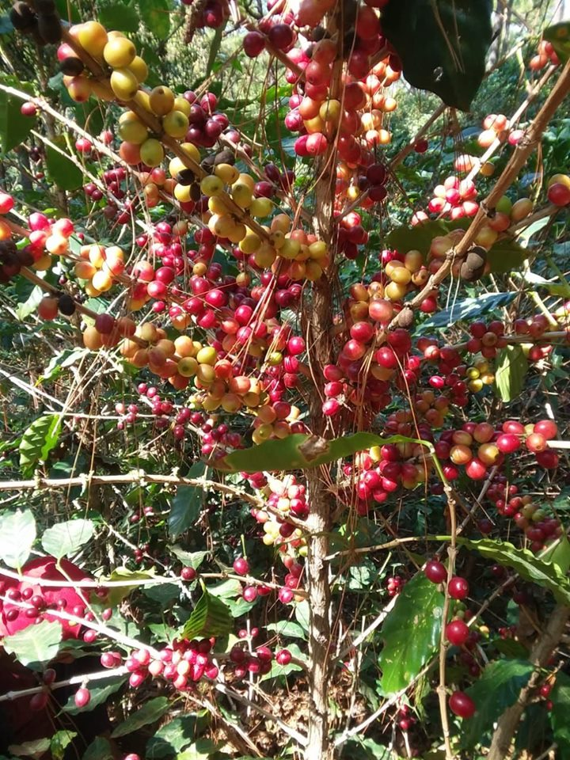

Merlos Coffee SV
El cafe 100% artesanal
Nuestro café lleva garantia de ser 100% cosechado en la montaña, tostado y molido de manera artesanal, el mas fresco aroma y excelente calidad
Precisamente el procedimiento de tostado del café verde es clave para obtener una bebida de calidad. El tostado puede hacerse sin añadir ningún ingrediente al café, lo que se denomina tueste natural, o añadiendo azúcar a los granos del café, tostándolo mediante el procedimiento de torrefactado. Según se utilice uno u otro método de tueste se obtiene el grano de café natural.
La cafeína es el componente más importante del café, y el psicoactivo más consumido del mundo. Nada más tomar un café, la cafeína actúa en el cerebro, bloqueando un neurotransmisor, la adenosina, que hace que aumenten otras sustancias como la dopamina o la norepinefrina, que aceleran la actividad cerebral.
Muchos estudios realizados en humanos muestran que el café mejora varios aspectos de la función cerebral. Esto incluye la memoria, el ánimo, la vigilancia, los niveles de energía, los tiempos de reacción y la función cognitiva general. A cambio de estas ventajas el café nos mantiene despiertos por más tiempo, lo que puede provocar trastornos del sueño. Por eso la mayoría de expertos recomiendan no tomar más de cuatro tazas al día.
